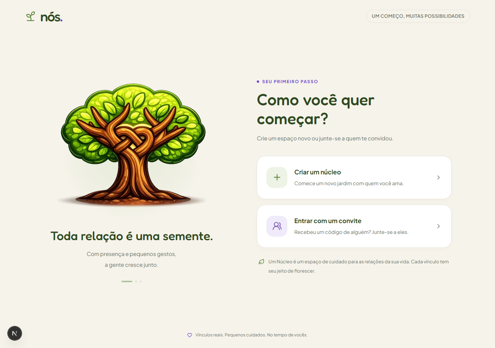
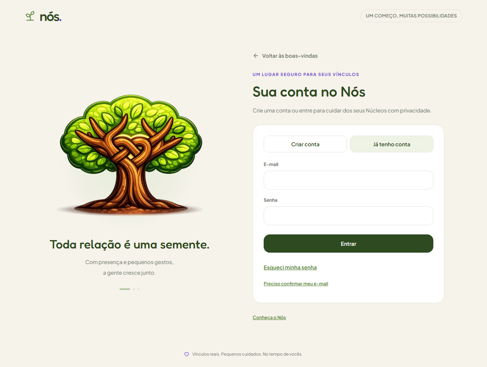
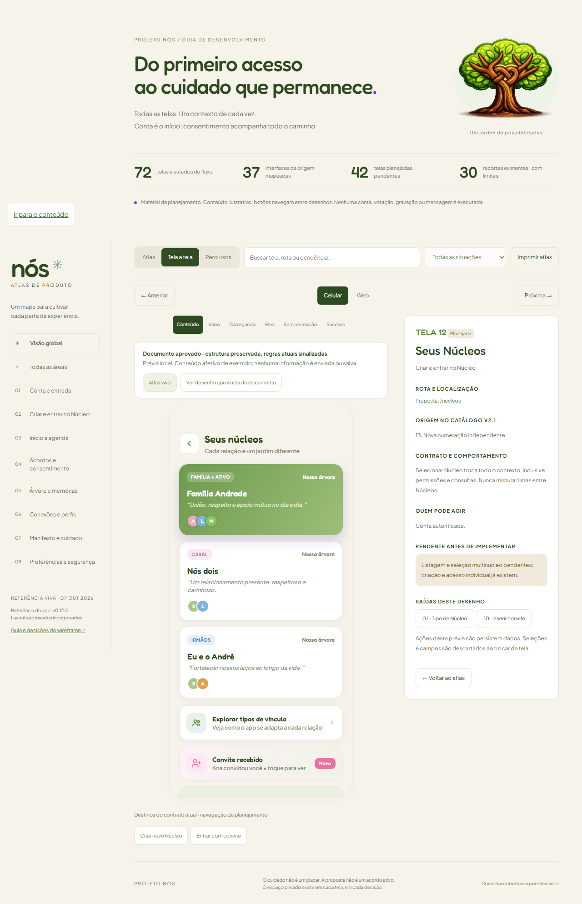
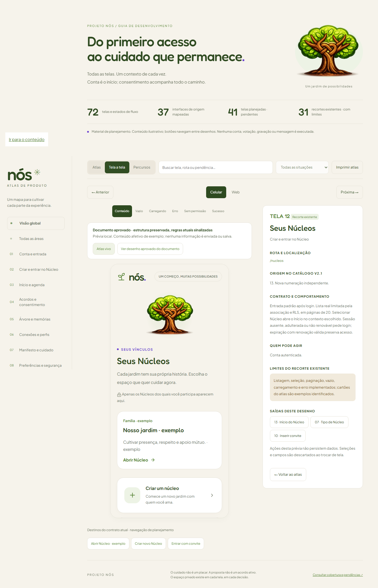
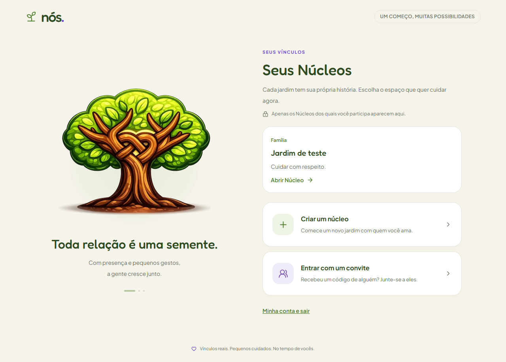
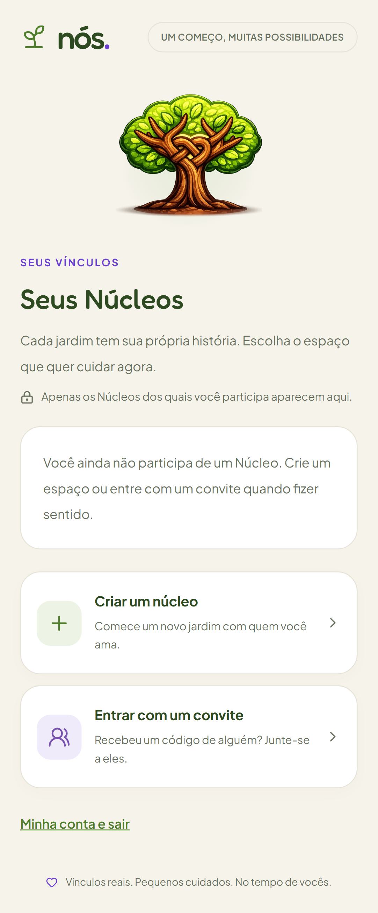
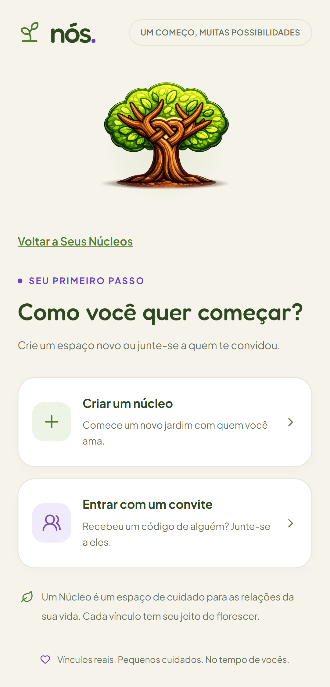
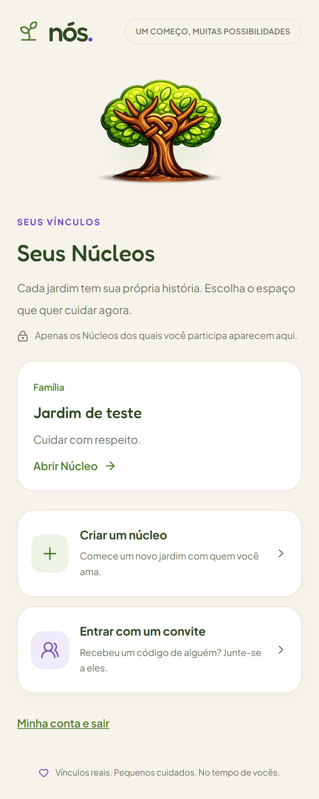
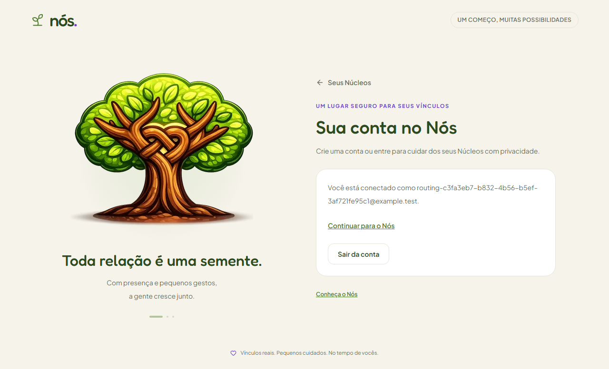
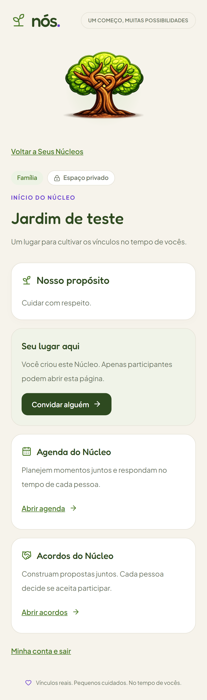

Sessão e sequência de páginas
2026-10-07 · Referência implementada: v0.13.0. Capturas reais em desktop/celular; testes locais aprovados.
Antes, visitantes abriam as etapas de criação; login retornava ao onboarding e Seus Núcleos era planejada. Depois, etapas privadas exigem sessão e a entrada padrão é Conta → Seus Núcleos → Início selecionado. Retorno específico conserva prioridade. Exemplos usam contas e Núcleos temporários locais.
Abertura sem sessão
Antes — /comecar aberto sem sessão
Depois — pedido de login com retorno preservado
Seus Núcleos
Não havia rota real para a listagem antes. A imagem anterior é referência planejada do atlas, sem integração.
Antes — Tela12 planejada
Depois — Atlas vivo com contrato implementado
Aplicativo — associações reais sob RLS
Aplicativo — lista vazia
Escolher caminho continua como alternativa
Depois — caminho autenticado com retorno à lista
Aplicativo — seleção no celular
Retornos no contexto autenticado
Conta — acesso à lista e saída
Início — retorno à lista
Abrir Atlas vivo · Índice das comparações